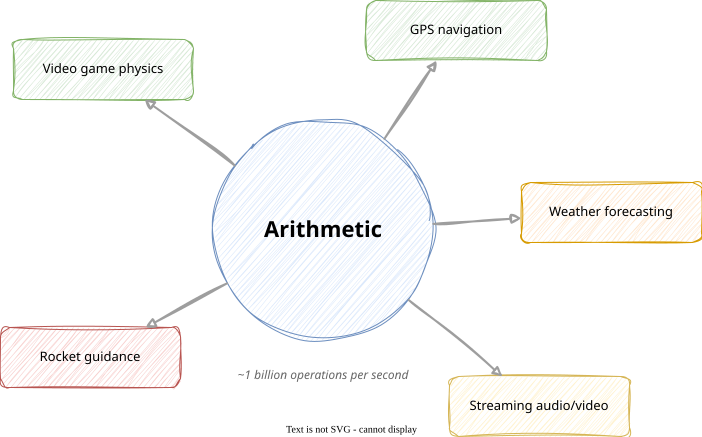
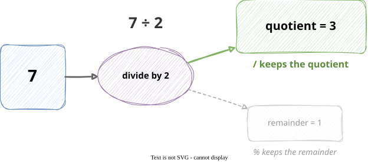
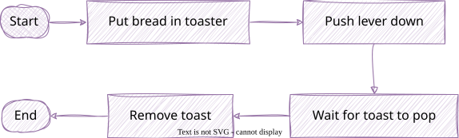
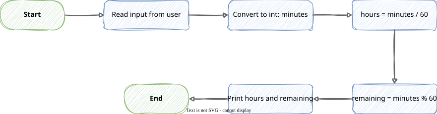

Write arithmetic expressions using +, -, *, /, and %
Explain how integer division differs from regular division and predict its result
Predict the order of evaluation in an expression by applying operator precedence rules
Use parentheses to control evaluation order
Convert string input to an integer with Integer.parseInt and use it in a computation
Use + to join strings with String concatenation
Arithmetic

Arithmetic
Every program that has ever run on a computer — games, GPS, streaming video, weather forecasts, the systems that control spacecraft — is built on arithmetic.
A modern computer can perform hundreds of millions to billions of arithmetic operations every second.
Arithmetic
What makes programs powerful is not any one operation — it’s combining simple operations and repeating them at enormous speed.
Here is the course in one sentence:
Learn the operators → combine them into expressions → repeat them with loops → apply them to collections of data.
Today: the operators.
What Is an Expression?
An expression is any combination of values, variables, and operators that the computer can evaluate to produce a single value.
Expression
Evaluates to
3 + 4
7
10 - 3
7
score * 2
twice whatever score holds
100
100
Expressions appear everywhere in a program:
int total = price * quantity;// expression on the right sideIO.println(score +10);// expression inside IO.println(...)
The computer evaluates the expression first, then uses the result.
Arithmetic Operators
Java has five arithmetic operators:
Operator
Name
Example
Result
+
Addition
3 + 4
7
-
Subtraction
10 - 3
7
*
Multiplication
6 * 7
42
/
Division
10 / 4
2 ← watch out
%
Modulo (remainder)
10 % 3
1
A quick note on each:
Multiplication is * — not × and not ·
Division with two whole numbers does not give a decimal — more on this next
Modulo (%) gives the remainder after division — more on this soon
Operator Precedence
Java follows the same precedence rules as mathematics.
PEMDAS still applies:
Parentheses first
Multiplication and division (left to right)
Addition and subtraction (left to right)
What does 2 + 3 * 4 evaluate to?
2 + 3 * 4
= 2 + 12 ← multiplication first
= 14
Not 20. Multiplication happens before addition.
Parentheses override everything:
(2 + 3) * 4
= 5 * 4 ← parentheses first
= 20
Tip
When in doubt — add parentheses. A program with extra parentheses is clearer and less likely to surprise you.
Integer Division
Here is the most common surprise in this entire lecture:
int result =7/2;IO.println(result);// prints 3, not 3.5
When both values are whole numbers, Java does integer division — the decimal part is dropped.
Expression
Result
Why
7 / 2
3
decimal part dropped
10 / 3
3
decimal part dropped
1 / 4
0
0.25 → drops to 0
8 / 2
4
divides evenly — no issue
Warning
The decimal part is dropped, not rounded. 7 / 2 gives 3, not 4.
To get a decimal result, make one of the values a decimal number:
double result =7.0/2;// one operand is a double → 3.5
The type of the operands determines the type of the result.

The Modulo Operator %
% gives the remainder after integer division.
Think of it as division with leftovers:
7 ÷ 2 → goes 3 times, with 1 left over
7 % 2 → 1
More examples:
Expression
Think
Result
10 % 3
3 goes into 10 three times (9), leaving 1
1
15 % 5
5 goes into 15 exactly — no remainder
0
7 % 10
10 goes into 7 zero times, leaving 7
7
Practical uses you will see again and again:
// Is a number even or odd?n %2// produces 0 if even, 1 if odd// What is the last digit of a number?n %10// extracts the ones digit// Stay within a fixed range (e.g., hours on a clock)hour %24
Note
% only tells you the remainder — not how many times the division went. That is what / is for.
Introducing Flowcharts
Before writing code, it helps to plan what the program should do.
A flowchart is a diagram that shows the steps of a program and how they connect.
Three symbols are enough for now:
Symbol
Shape
Meaning
Start / End
Oval
Where the program begins and ends
Step
Rectangle
A single action (compute, read, print)
Flow
Arrow
What happens next
Example — making toast:

Note
We will add a diamond shape for decisions — “if this, do that; otherwise, do this” — when we cover conditionals next week.
Integer.parseInt — Numbers from the User
IO.readln always produces a String — even if the user types a number.
String input = IO.readln("How many minutes? ");// input holds "137" — the TEXT, not the number
You cannot do arithmetic on a String:
input /60// ERROR — can't divide text
Integer.parseInt converts a String to an int:
int minutes =Integer.parseInt(input);// now minutes holds the number 137
Or in one step:
int minutes =Integer.parseInt(IO.readln("How many minutes? "));
Warning
If the user types something that is not a whole number — like "hello" or "3.5" — the program will crash. Handling that gracefully is a topic for later in the course.
Putting It Together
Problem: Ask the user how many minutes they have been studying. Print the equivalent hours and minutes.
Plan it first:

Now write it:
Java
void main() {
int minutes = Integer.parseInt(IO.readln("Minutes studied: "));
int hours = minutes / 60;
int remaining = minutes % 60;
IO.println("Hours:");
IO.println(hours);
IO.println("Minutes left over:");
IO.println(remaining);
}
Terminal
Sample run (137 entered):
Minutes studied: 137
Hours:
2
Minutes left over:
17
String Concatenation
The + operator does different things depending on the types involved.
With two numbers — addition:
int a =5;int b =3;IO.println(a + b);// prints: 8
With a String — concatenation (joining):
String first ="Hello, ";String second ="world!";IO.println(first + second);// prints: Hello, world!
Mixing a String and a number:
int score =42;IO.println("Score: "+ score);// prints: Score: 42
Java converts the number to text automatically before joining.
Watch out — order matters:
IO.println("Total: "+5+3);// prints: Total: 53 ← not 8!IO.println("Total: "+(5+3));// prints: Total: 8 ← add first
Evaluation goes left to right: "Total: " + 5 produces "Total: 5", then "Total: 5" + 3 produces "Total: 53".
Tip
Recall from last lecture: we printed labels and values on separate lines because we did not have + yet. Now we can write IO.println("Score: " + score) and put them on one line.
Common Mistakes
1. Expecting a decimal from integer division
int result =7/2;IO.println(result);// prints 3 — not 3.5
Fix: make one operand a decimal — 7.0 / 2.
2. Missing parentheses changing the result
int avg =10+20/2;// prints 20 — not 15int avg =(10+20)/2;// prints 15 — as intended